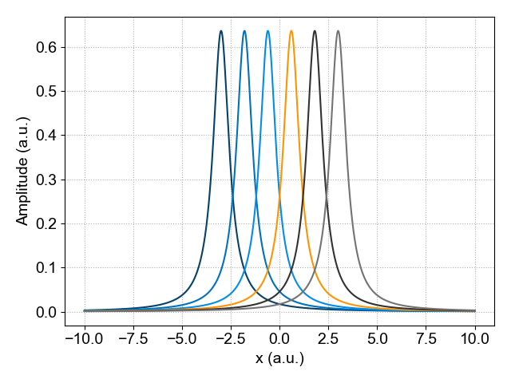

Indexing
In this section we will give a short overview how to index a SpinLab data object.
Generate an Example Data Set
First, we start by generating an example data set. To do this, we will first Use the built-in function math.lineshape.lorentzian to generate a 2D data set of Lorentzian distributions followed by creating the SpinLab data object using the function sl.SpinData.
>>> import numpy as np
>>> import spinlab as sl
>>> x = np.linspace(-10,10,1024)
>>> y = np.linspace(-3,3,6)
>>> values = sl.math.lineshape.lorentzian(x.reshape(-1, 1), y.reshape(1, -1), 0.5)
Next, create the SpinLab data object
>>> data = data = sl.SpinData(values, ["x", "x0"], [x, y])
For this example the two dimensions are labeled x and x0.
The SpinData object can be easily ploted using the built-in plotting function:
>>> sl.plt.figure()
>>> sl.plot(data)
>>> sl.plt.grid(ls = ":")
>>> sl.plt.ylabel("Amplitude (a.u.)")
>>> sl.plt.tight_layout()
>>> sl.plt.show()
{kind=link}

Plot of the two-dimensional SpinLab data object.
Indexing a SpinLab Data object
A SpinLab data object has typically 4 different attributes:
values (Numpy array): Numpy Array containing data
coords (Python list): List of numpy arrays containing axes of data
dims (Python list): List of axes labels for data
attrs (Python dictionary): Dictionary of parameters for data
The content of the sldata object can be easily viewed using the Python print function:
>>> print(data)
values:
1024 x 6 ndarray (float64)
dims:
['x', 'x0']
coords:
array([-10. , -9.98044966, -9.96089932, ..., 9.96089932,
9.98044966, 10. ], shape=(1024,))
array([-3. , -1.8, -0.6, 0.6, 1.8, 3. ])
attrs:
Indexing using Integers
Let's start with the simplest way to extract (index) a single spectrum from a 2D data set. The data set that was created earlier has two dimensions: One dimension contains the Lorentz distribution (dim = 'x') and the other dimension referes to different locations (dim = 'x0').
The user has to specify the name of the dimension from which a slice has to be extracted. This index has to be an integer and follows the Python convention for indexing (0 is the first index, -1 is the last index).
To index a sldata object, specify the name of the dimension and the index of the slice. To specify a slice based on the index, an integer is used. For example, to select the slice with index 3 use:
>>> data_slice_integer = data["x0", 3]
>>> data_slice_integer.squeeze()
This will select slice 3, and a new sldata object is created. However, taking the slice does not remove the x0 dimension. We can remove dimensions of length 1 with the squeeze() method to remove the x0 dimension.
It is also possible to select a subset of the original data by specifying a range of values. To do this, we use a tuple specify the minimum and maximum values for the index. For example:
>>> data_slice_range = data["x0", (-3, 3)]
The last slice can be extracted by using:
>>> last_slice = data["x0", -1]
Indexing using Float
In the previous example, a single slice or a sub-set of spectra was selected using an integer number to index the data set. This is convenient if this dimension has only a small number of indexes. However, when this dimension is large it is less convenient to use an integer and a specific region can be extracted using a float. In this case, the nearest float will be picked.
To do this, we use a float to specify the location. In Python, by adding a period after the number, the number is interpreted as a float instead of integer (for example 3. or 3.0 indicate a float).
To extract a slice at a specific value of the x axis use:
>>> data_slice_float = data["x", 0.5]
>>> data_slice_float.squeeze()
As in the previous example, we can remove the x0 dimension using the squeeze() method.
Indexing Multiple Dimensions
#For multi-dimensional data sets, the user can specify multiple dimensions at once. For example data['x', 1:10, 'y', :, 'z', (3.5, 7.5)].